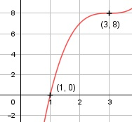

Aufgabe 44 f(x) = x3 - 9x2 + 27x - 19 f'(x) = 3x2 - 18x + 27, f''(x) = 6x - 18, f'''(x) = 6 Definitionsbereich: -∞ < x < ∞ Wertebereich: -∞ < f(x) < ∞ Asymptoten: - Symmetrie: - Nullstellen: x3 - 9x2 + 27x - 19 = 0 Hornerschema: 1 -9 27 -19 x1 = 1 1 -8 19 -------------------------- 1 -8 19 0 Polynomdivision: x3 - 9x2 + 27x - 19 : (x - 1) = x2 - 8x + 19 -(x3 - x2) ------------ -8x2 + 27x - 19 -(-8x2 + 8x) -------------- 19x - 19 -(19x - 19) ----------- 0 x2 - 8x + 19 = 0 p, q - Formel: p = -8, q = 19 x2,3 = x2,3 = 4 ± x2,3 = 4 ± --> keine weiteren Nullstellen N1(1|0) Schnittpunkt mit der y-Achse: f(0) = 03 - 9 * 02 + 27 * 0 - 19 = -19 Sy(0|-19) Extrempunkte: 3x2 - 18x + 27 = 0 A, B, C - Formel: A = 3, B = -18, C = 27 x1,2 = x1,2 = x1,2 = x1,2 = 3, f(3) = 33 - 9 * 32 + 27 * 3 - 19 = 8 f''(3) = 6 * 3 - 18 = 0 --> kein Extrempunkt Wendepunkt: 6x - 18 = 0 |+18 6x = 18| :6 x = 3, f(3) = 8, f'(3) = f''(3) = 0, f'''(3) ≠ 0 --> Wendepunkt (Sattelpunkt) (3|8) Graph:
